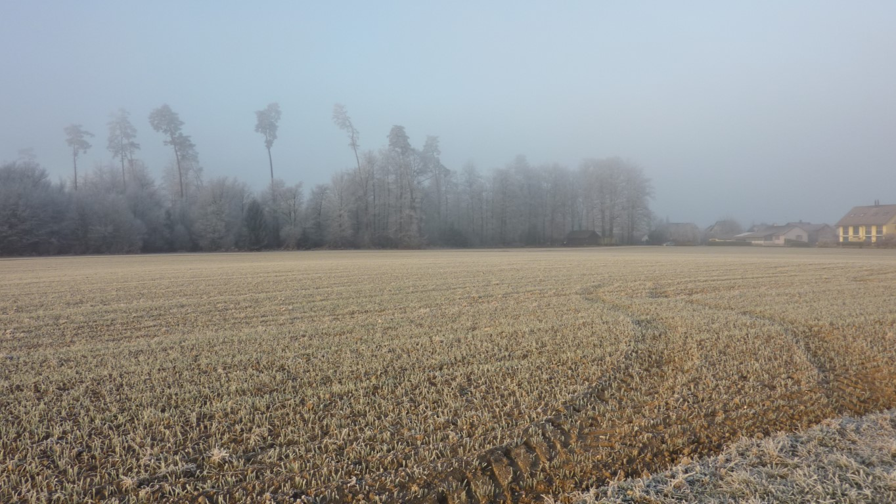
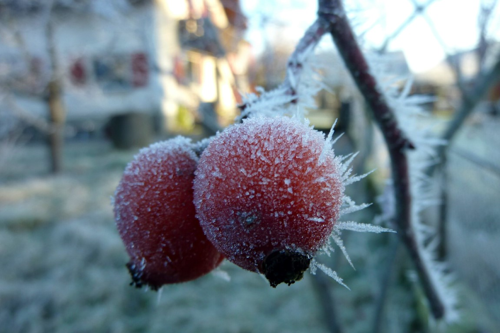
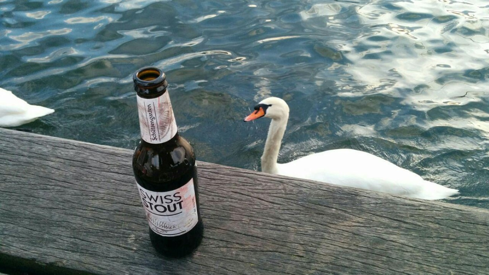
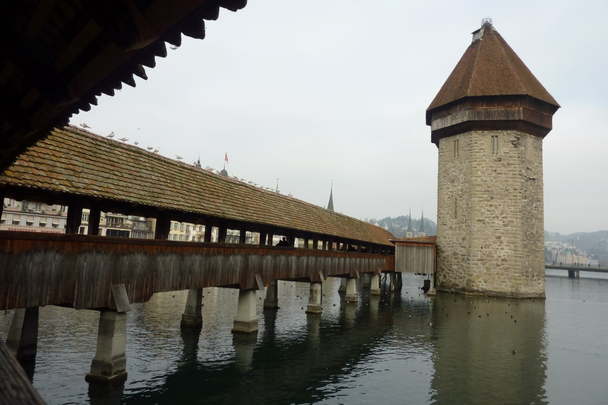
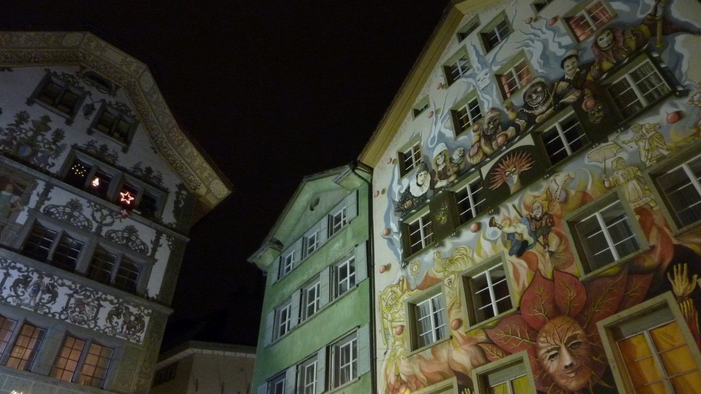
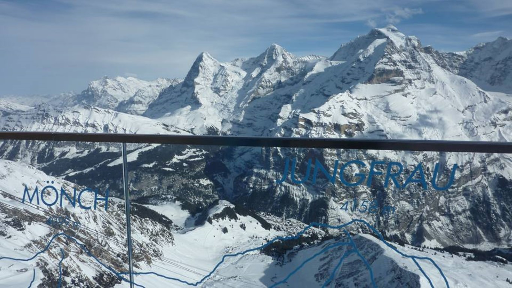
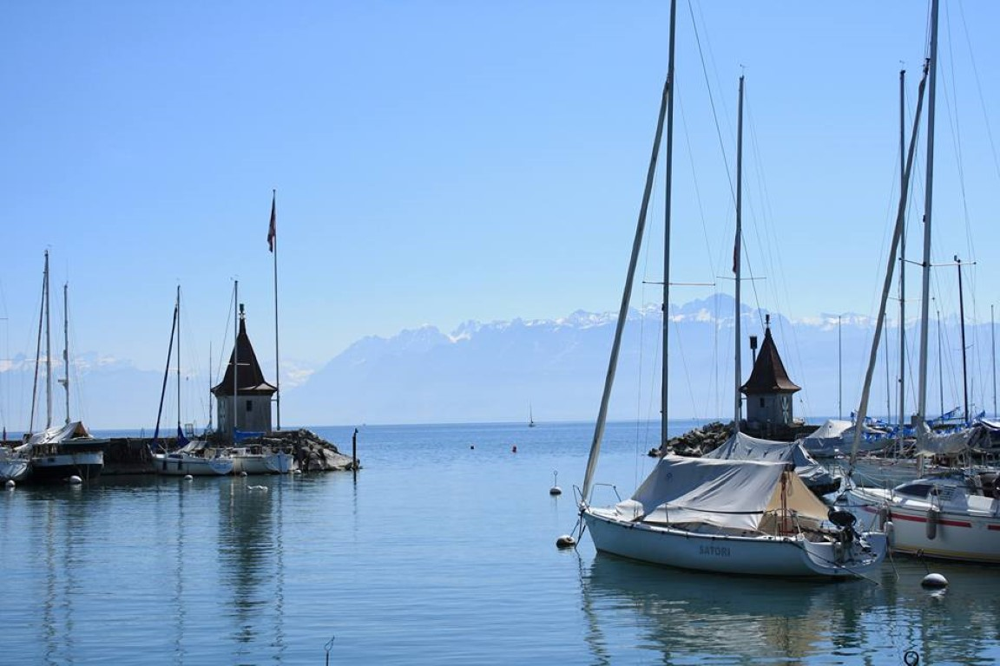
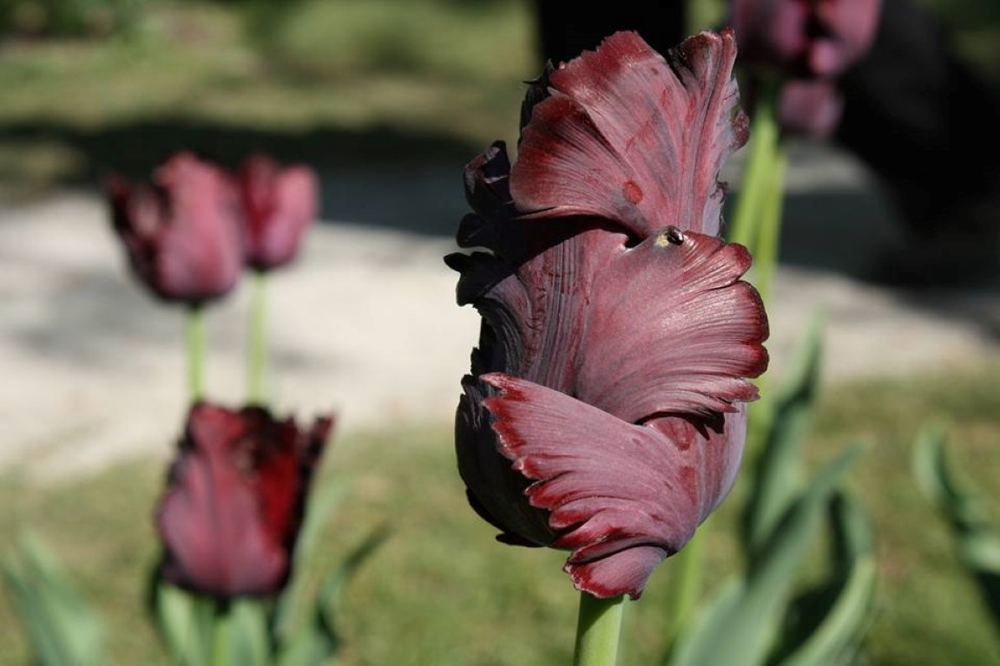
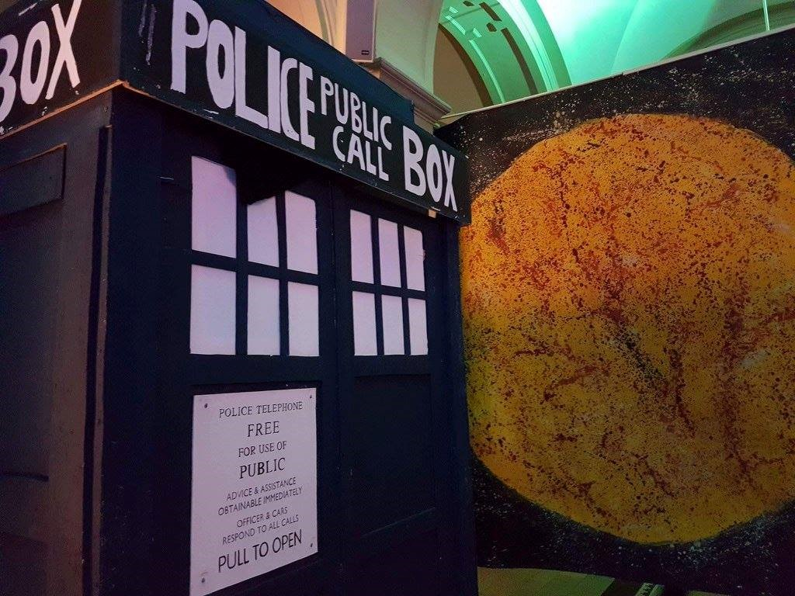
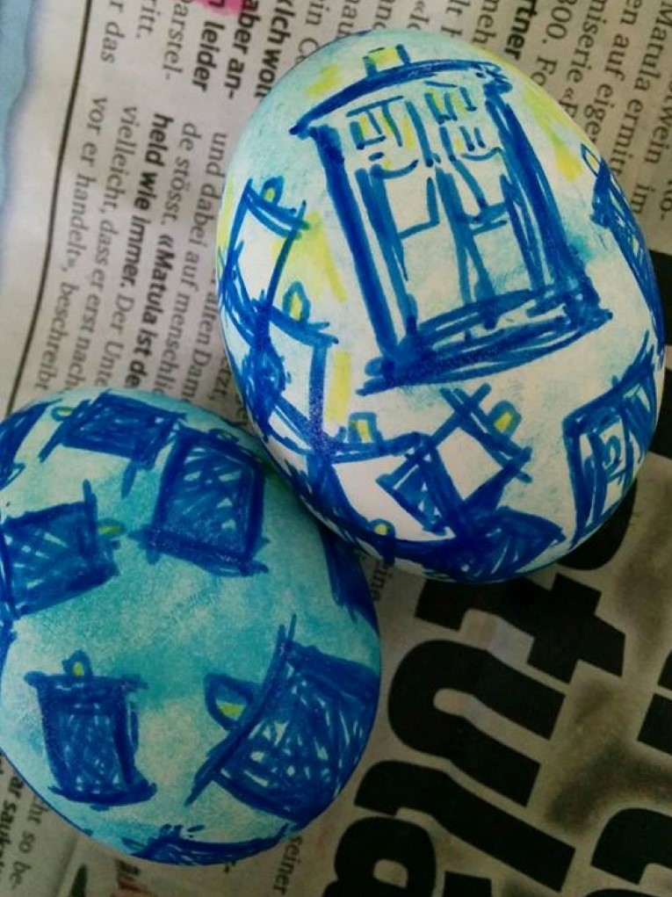

Leaving Zermatt. It was a stunning train journey back to Zurich.
Workaway host in Lagenthal
Winter arrived

Day trip to Stein Am Rhein (pictured) and Schaffhausen
Drinking Swiss Stout by the lake in Zurich. My favourite Swiss ale.
Lucerne
Lucerne...at night
Interlaken mountains
Morges, in the French part of Switzerland
Fabulous tulip
Polyball was themed "Lightyear in a Night!" SO THAT MEANT 'TARDIS'!
Painting easter eggs in Ticino, the Italian part of Switzerland...Obviously I made mine in a TARDIS design